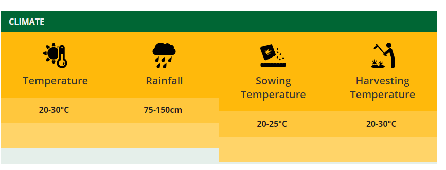

About Sugarcane
Sugarcane, Saccharum officinarum L. is a perennial gras. It belongs to bamboo family and it is indigenous to India. It is the main source of sugar, jaggery and khandsari. About two-thirds of the total sugarcane produced in India is consumed for making jaggery and khandsari and only one third of it goes to sugar factories. It also provides raw material for manufacturing alcohol. Brazil is largest producer of sugarcane followed by India, China, Thailand, Pakistan and Mexico. In India, Maharashtra is largest producer of sugar and it contributes about 34% of sugar in country followed by Uttar Pradesh.
